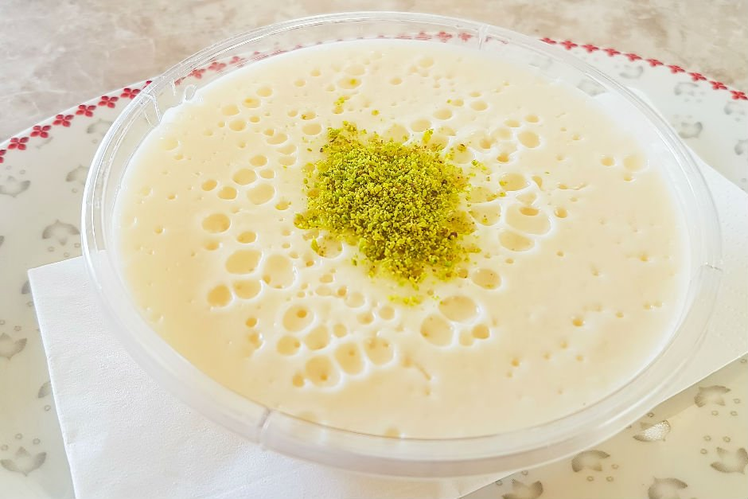
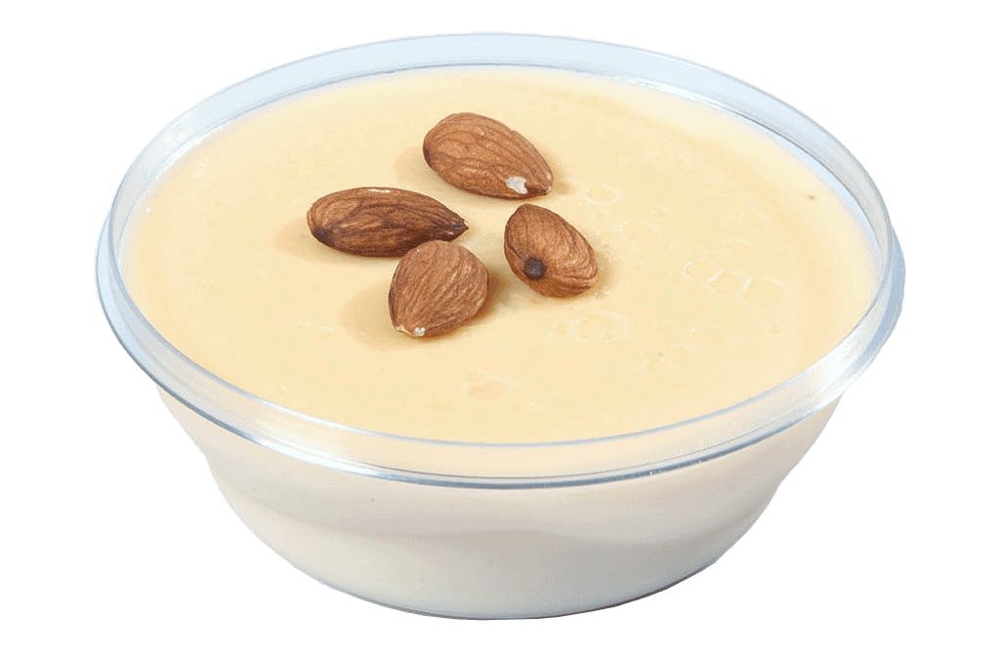

10 dk Hazırlık - 20 dk
Pişirme
restaurant
Keşkül de sütlaç ve tavuk göğsü gibi piştikten sonra çok
yoğun bir kıvamda olmamalı. İçerisinde pirinç unu olduğu
ve soğuyunca kıvamını bulacağı için kontrollü olarak
pişirin. Eğer buğday nişastası kullanırsanız daha tok ve
yoğun bir kıvamı olacaktır, dilerseniz pirinç unu yerine
2 yemek kaşığı tepeleme buğday nişastası da
kullanabilirsiniz.

Keşkül Tarifi İçin Malzemeler
- 1 lt süt
- 1/2
su bardağı
toz şeker
- 3
yemek kaşığı
pirinç unu
- 1
çay bardağı
toz badem
- 12
adet
badem
- 1
yemek kaşığı
file antep fıstığı

Keşkül Tarifi Nasıl Yapılır?
- Toz şeker, pirinç unu ve toz bademi derin bir tencereye aktarın.
- Sütü ekleyin ve bir çırpıcı yardımıyla karıştırıp tüm malzemelerin pürüzsüzce birleştiğine emin olun.
- Orta-kısık ateşte devamlı olarak karıştırarak kıvamı hafifçe koyulaşıncaya dek yaklaşık 15-20 dakika pişirin. Krema kıvamına geldiğinde ocaktan alın. Keşkülün kıvamı muhallebi kadar yoğun olmamasına özen gösterin.
- Pişen keşkülü servis kaselerine paylaştırın. Önce ilk sıcaklığının çıkmasını bekleyin. Ardından buzdolabına alarak dinlendirin.
- Tencerede kaynamakta olan sütten 1-2 kepçe alıp kaseye
ekleyin. (pirinç unu ılınmış olmalı).
- Servis etmeden önce üzerlerini badem ve file Antep fıstığı ile süsledikten sonra soğuk olarak servis edin, işte bu kadar!
Afiyet olsun...